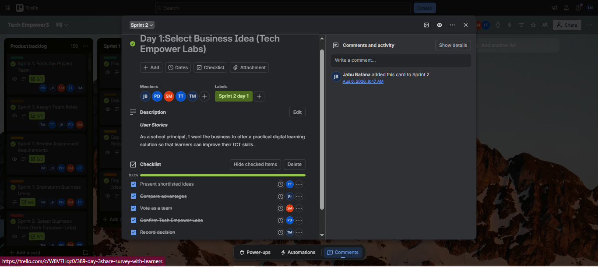
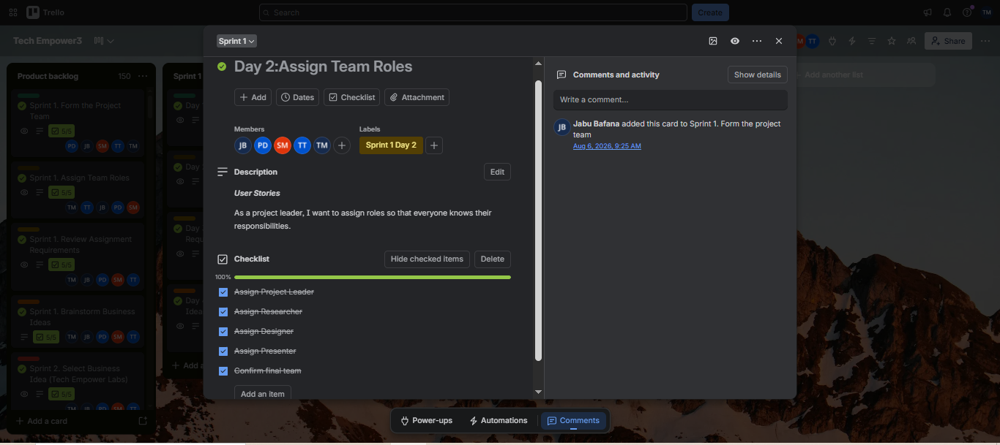
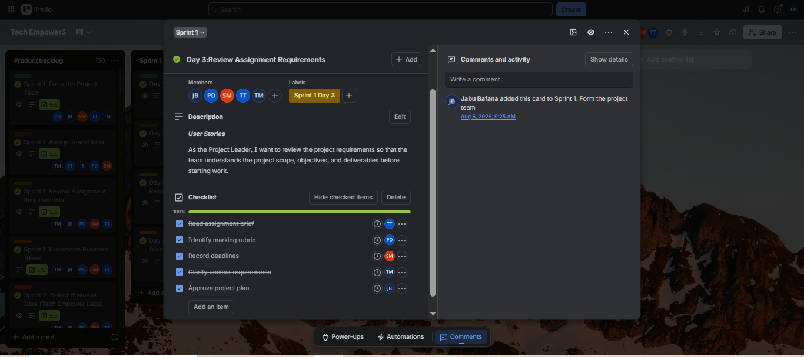
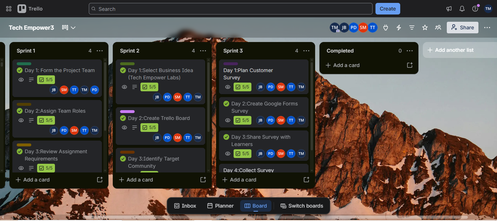

ASSESSMENT AREA 04
Sprint Backlog
The work selected for each sprint and its progress.
Evidence
This section presents evidence of the sprints completed or planned for the Tech Empower Labs project. The screenshots show the Trello cards for each sprint, and the final image shows all the sprints together.
Sprint 1

Sprint 2

Sprint 3

All the Sprints

My reflection
Working with sprint backlogs helped me understand how project work can be divided into manageable stages. Each sprint provides an opportunity to organise tasks, monitor progress and review the work completed.
Dividing each sprint into daily cards also made it easier to see who was responsible for what. In future projects, I would improve sprint planning by reviewing priorities, tracking progress consistently and documenting the outcomes of each sprint.